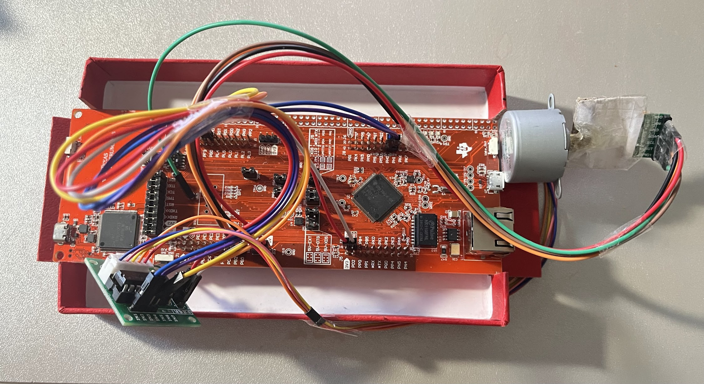
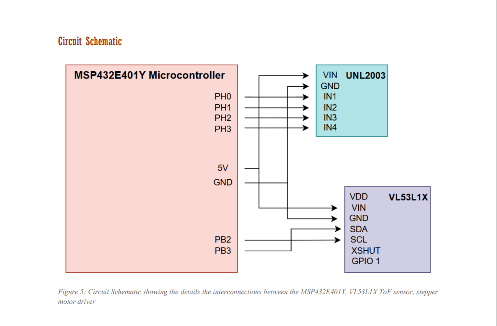
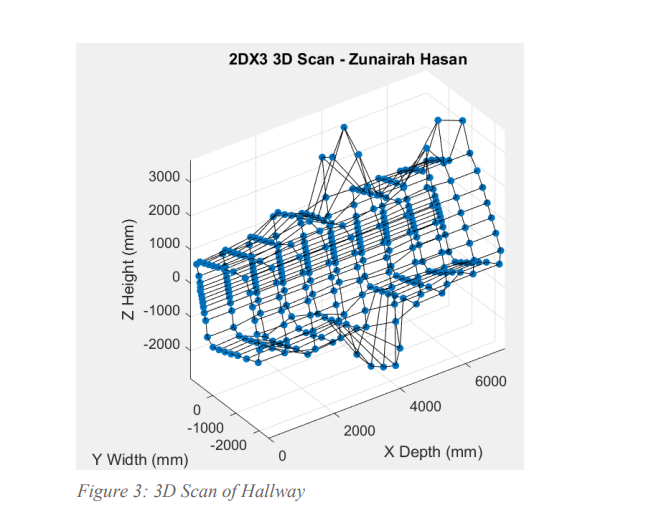
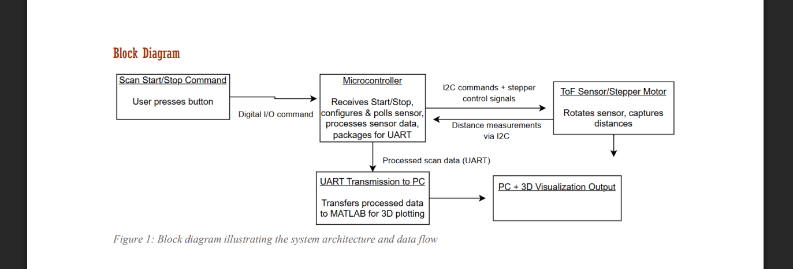
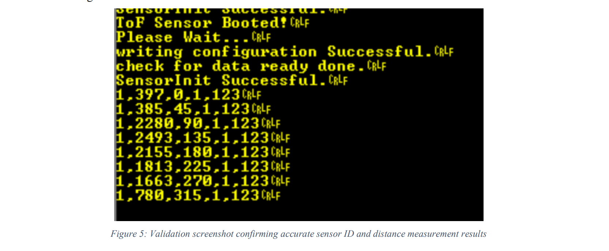

2DX3
Indoor Mapping Embedded System
This project brought together sensing, control, embedded programming, and visualization into one integrated system. Across the course, I developed the skills needed to observe signals, reason through timed control, and act through interrupts and sensor-driven behavior, culminating in a low-cost indoor mapping module.
Project summary
A Time-of-Flight sensor mounted to a stepper motor collected distance data across a rotational scan. The microcontroller packaged and transmitted the scan data over UART, while MATLAB parsed the incoming values and reconstructed a visual representation of the scanned space.

Course focus
Microprocessor systems, embedded interfacing, sensing, timing, and system integration.
My role
Designed, programmed, tested, and documented the embedded system and its scanning workflow.
Main challenge
Integrating sensor data collection, motor control, and communication into one working system.
Final outcome
A functional low-cost indoor mapping prototype with UART data transmission and MATLAB visualization.
Hardware block diagram
From Observe → Reason → Act → Integration
Observe
I began with GPIO-based observation and FSM-driven input handling. This stage taught me how the microcontroller monitors button states, tracks sequential input, and structures observations before action.
Reason
I then worked with PWM, timing logic, stepper motor sequencing, and keypad decoding. This stage emphasized how embedded systems process input and apply rules to produce controlled output behavior.
Act
The next stage focused on interrupts, real-time responsiveness, software debounce, and ToF sensor interfacing over I2C. This made the system more event-driven and physically responsive.
Final integration
I combined these ideas into the indoor mapping module, where the sensor gathered distance data while the motor rotated through a scan path, and the system transmitted measurements for visualization in MATLAB.
How the system works
- VL53L1X Time-of-Flight sensor collects distance values.
- Stepper motor rotates the sensor through a scan path.
- MSP432E401Y controls timing, polling, and data packaging.
- UART sends scan values to a connected computer.
- MATLAB parses the incoming packets and generates a 3D-style spatial visualization.
Technical skills developed
- GPIO input monitoring and state tracking
- Finite State Machine implementation
- PWM timing and motor control
- Interrupt handling and software debounce
- I2C communication with ToF sensor
- UART data transmission
- MATLAB-side data parsing and visualization
Project gallery

System assembly

Visualization output

System architecture

Debugging & validation
What made this difficult
The hardest part of the project was not any single component by itself, but the integration of multiple subsystems. Accurate distance collection, motor stepping, timing, transmission, and visualization all had to work together in a reliable sequence.
How I worked through it
I approached the project in layers: validate the input and timing behavior first, then sensor communication, then motor movement, then serial output, and finally end-to-end testing with MATLAB. This incremental build process made debugging more manageable.
Hardware & software stack
ToF scanning simulator
This canvas simulates how the VL53L1X sensor and stepper motor work together to map a space. Click to place or remove obstacle blocks, select a room layout, then press Start Scan to see the distance measurements and UART packets in action.